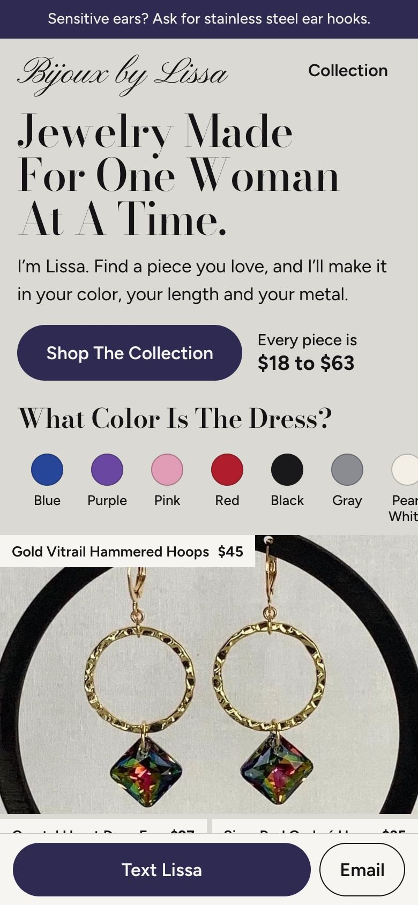
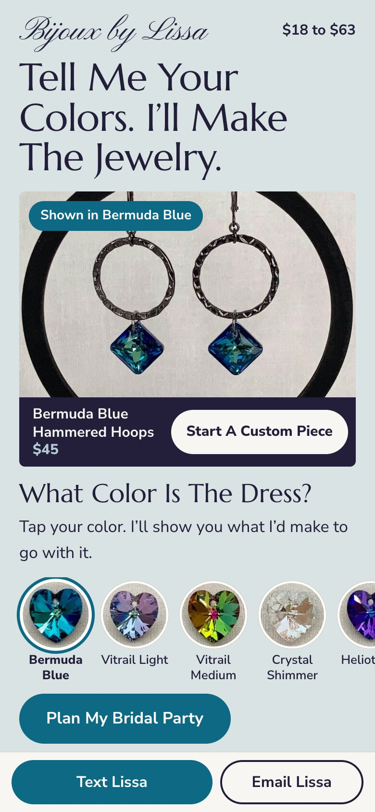
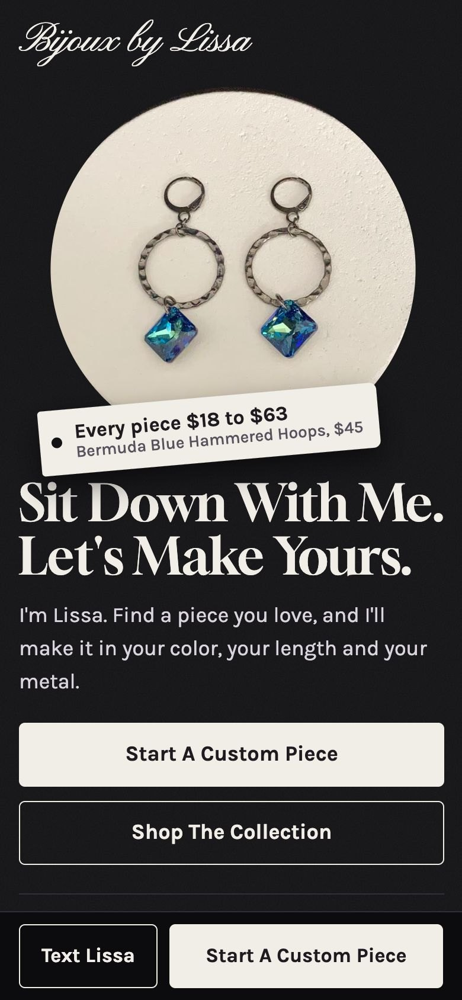
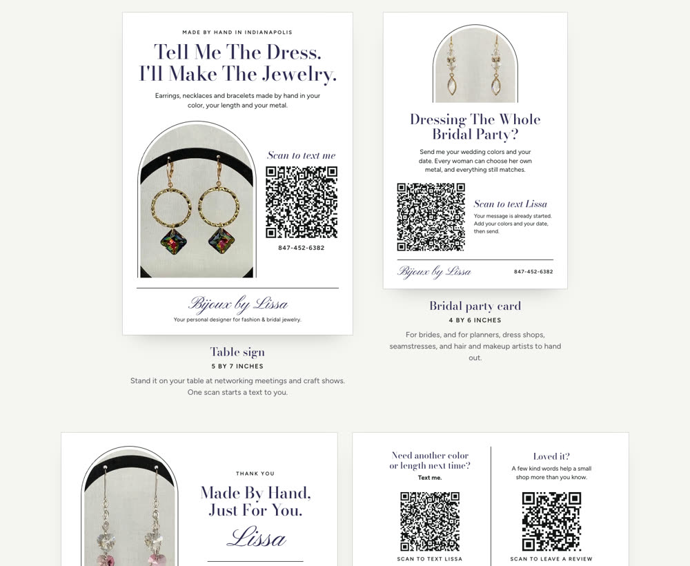

2 Guys and a Genie
2 Guys and a GenieMade for Melissa Davis · Bijoux by Lissa · Nov 11, 2026
Melissa, You Told Me Where You Get Stuck. So We Started There.


Your work. Every photo on this page is one you took.
When we sat down today you told me three things. You've been designing for 16 years. Your best customers come from sitting across from you, one on one. And the thing that stops you from putting more pieces online is writing the descriptions.
Then I asked what your wildest wish for AI would be, and you said a website that would be easy to handle.
So while we were still sitting there, I asked my AI team to get to work. This page is what came back. It's yours. Keep it, use it, show it to anyone you like.
Jimmy
1. All 35 Of Your Listings, Rewritten
We read every listing in your Etsy shop and wrote each one again, to the woman who is deciding whether to buy it. Same facts. Your voice. A new title people actually search for, a new description, and 13 tags for each piece.
Every one has a Copy button. Open the listing, paste, done.
Open All 35 RewritesFrom here on it's even easier. Snap a photo of a new piece, say three things about it out loud, and the description writes itself. That's the part I'd love to set up for you.
2. Three Websites To Pick From
Before designing anything we looked at the best independent jewelry sites out there, screen by screen, and wrote down where each one falls short. Then we built three different ideas for you, with your real pieces and your real prices in each. Tap around. They work.

A. The Jewelry Box
A boutique you can browse by where you're wearing it and by color. Tap Blue and every blue piece steps forward.
Open Website A
B. Your Day, Your Colors
It opens with one question: what color is the dress? Then it helps a bride dress her whole bridal party and text you the list.
Open Website B
C. Design It With Lissa
The closest thing to sitting across the table from you. Pick a piece, the metal, the color and the length, and the order ticket fills itself in.
Open Website CThese are ideas, not finished sites. The one thing each is missing is you. A photo of you at your bench would change everything.
3. Who Is Really Buying From You
We built this from your own reviews, your listings, and how you told me you sell. Three women. The first one is who buys from you today. The second is where the growth is.
The Woman With A Date On The Calendar
There's a wedding, a shower, an anniversary dinner or a work party coming. The outfit is already hanging in her closet. She needs the one piece that finishes it. Brenda said it in her review: "perfect for the wedding this weekend!"
- "Will it match my dress?" She wants her exact shade, not close enough.
- "Will it look cheap in person?" She wants sparkle that looks like more than she paid.
- "Will it bother my ears?" Your stainless steel hooks answer this. Say it louder.
- "Is it the right length for this neckline?" You already let her choose.
- "Can I wear it again?" Myrletta said hers "will go with so many things."
The Bride And Her People
A bride buying for her bridesmaids, or a mother of the bride or groom matching her dress. One yes from her is four to ten pieces, not one.
- "Will they all match?"
- "Can each girl pick gold or silver?" With you, yes.
- "Will it be here before the shower?"
- "Will they ever wear it again?" On the wedding forums, this is the big fear. Bridesmaids say they never wore the matching jewelry again because it wasn't their style. Letting each woman choose her own metal and length is your answer.
The Gift Giver
Birthstone hoops for a mom or a daughter. A diffusing bracelet for the friend who loves her oils. She's asking: is it personal, is it her color, and does it come ready to give?
Where this came from
Your ten Etsy reviews, your 35 listings, what you told Jimmy on Nov 11, and what brides and bridesmaids write on Reddit's wedding boards, The Knot and WeddingWire, plus reviews on the biggest crystal bridal shops on Etsy. Sources: Reddit: bridesmaid jewelry, Reddit: sensitive ears, The Knot: matching jewelry.
4. What The Big Shops Do, And The One Thing They Can't
We studied 22 shops that sell what you sell. Here are the ones worth knowing. The numbers are what each shop showed publicly this week.
Etsy · about 81,500 sales · 455 listings
Gets right: matching sets, clip-ons, custom orders, clear timing.
Gets wrong: 455 listings, all "on sale," with titles nobody can read. You get lost.
Etsy · about 38,000 sales · 12 years
Gets right: gift packaging and pieces that coordinate, so ordering for a whole bridal party feels natural.
Gets wrong: a huge catalog of familiar designs. No person behind it.
Etsy · about 3,100 sales · pieces from about $52 to $136
Gets right: the closest to your kind of work. Beaded crystal and pearl in her own color combinations, and it lets her charge more than the plain crystal drops.
Gets wrong: long repeating titles hide what makes each piece special.
Her own website · custom bridal from $50
Gets right: she flat out asks you to send a photo of the dress and a color swatch. That is exactly your strength.
Gets wrong: it's confusing whether you're booking a chat or buying.
Her own studio in Charlotte
Gets right: jewelry-making parties at $60 a person, 4 to 15 guests, two hours. A whole second business from the same beads.
The One Thing None Of Them Have
You. The big shops are catalogs. Hundreds of listings, everything marked down, and no easy way to talk to the person who makes it.
You sit down with a woman, look at her dress, and make the piece in her color, her length and her metal, with ear hooks that won't bother her. That is the most valuable thing in this whole market, and right now it only happens when someone meets you in person.
Everything on this page is about letting more women sit down with you without you having to be in the room.
Your own numbers, as we found them
Etsy: 35 listings, 29 sales, 10 reviews, every one of them 5 stars, 6 years. Instagram: 154 followers. Facebook: 40 followers. On X: nothing, and we found very little handmade jewelry there at all. You are not behind. You just haven't been seen yet.
5. If We Took This Five Times Bigger
Not by working five times harder. By changing three things.
Get Everything You Make In Front Of People
You told me you make far more than what's on Etsy, because every listing takes so long. That stops being true today. Photo, three facts out loud, done.
Sell The Whole Party, Not One Pair
One bride is four to ten pieces in a single conversation. "Send me your colors and your date" is an offer the big shops can't make. Mothers of the bride and groom too.
Let Other People Send You Brides
Wedding planners, dress shops, seamstresses, hair and makeup artists all meet her before she thinks about jewelry. A small card with a QR code that starts a text with you (it's in section 6) is all they need. The people in Jennifer's group can do the same.
Other Doors That Fit One Woman At A Bench
Real examples we found, with what those makers charge. Not promises. Just proof that people pay for these.
- Jewelry-making parties. Girls' night, bridal showers, team outings. One studio charges $60 a person for groups of 4 to 15.
- Repair and restringing. You already have the skill. One shop starts at $15 a restring.
- Birthstone gifts for mothers and grandmothers. You already make birthstone hoops and wrap bracelets. A "one stone for each child" bracelet is the same beads with a story.
- Closing gifts and client gifts. A realtor or a financial advisor who wants to give something personal. Small batches, one design, their client's birthstone.
- Company team events. One bead studio's packages start at $380 for 12 people.
- Diffusing jewelry through the oil community. Women who sell essential oils are always looking for a pretty way to wear them.
- A gift card for "design something together." The gift is the hour with you.
Later, not now: wholesale to boutiques, subscriptions, permanent jewelry. They add work before they add income.
6. Table Signs And Cards With QR Codes
Your business is in-person, so we made things you can hold. A table sign for networking meetings and craft shows. A thank-you card for every order. A bridal party card that wedding people can hand out. A tag for your displays. Each QR code starts a text to your phone with the first line already written.

Open The Print PiecesThey work right now. Scan one with your camera and see.
7. A Few Questions I'd Love To Ask You
Everything above came from six minutes of talking and what's public. With your answers to these, we could build the real thing. No right answers. Just talk.
- Tell me about the favorite piece you ever made for someone. Who was she, and what did she say when she saw it?
- Think of your five best customers ever. What do they have in common? This tells us exactly who to go find more of.
- Your last ten orders: how many came from someone you met in person, and about what did each one spend?
- How many pieces have you made or designed that aren't on Etsy yet? If you have photos, even better. That's a shop waiting to open.
- Have you ever done a whole bridal party? How did it go, and would you want two of those a month?
- Where is the line on custom for you? What do you love changing, and what's a no? Your Etsy page says you've moved away from from-scratch pieces. I want the site to promise only what you love doing.
- How many pieces can you comfortably make in a week, and how many hours do you want this to be?
- What part of the business would you love to never touch again?
- How do you decide what to charge for a piece?
- Who already sends you people, or could? A planner, a dress shop, a salon, a church group, a friend who sells oils?
- Do you keep your customers' names, emails or birthdays anywhere?
- If it all went the way you secretly hope, what does a great month look like three years from now?
Easiest way to answer: reply to my text, or record a voice memo on your phone and send it to me. Ramble. That's where the good stuff is.
One Last Thing
You have 16 years of skill and ten out of ten five-star reviews. The work was never the problem. People with the biggest hearts usually have the hardest time talking about themselves. So let this page do the talking for a while.
If you want any of this made real, tell me. If you just want to keep the descriptions and run, that makes me happy too.
Jimmy Davis
2 Guys and a Genie · Fishers
Call or text: (317) 751-2693